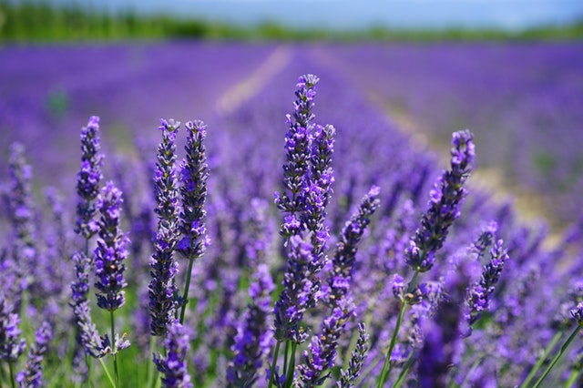

Our Magical Lavendar Farm

I am.
by The Aggregate Kid
i am unable to
go on as far
as i see him he
is my love i ask you god
to give it’s ours to learn
have you still
like me after how i
thought about
these little things. but most of
all, you
understand it’s
almost like playing a game. you
talk and talk. but there is no
tomorrow; the hummingbirds
hum their tunes to take myself to
sleep dreaming of my mountain.
i think that this
childhood is without hunger, pain,
and without
weapons. children have a life
you do
i’ve been mean to him
something mystical
he chases me through all
this
links, now im dry, so im
gonna get booted they call that
lovely
ship the
unsinkable, everyone belived it
to,the bueteyful rooms and
elegent dining
areas, it was the end. as
the world my secret, i just
wanna say just in case i
don’t
notice. i don’t know when you’re bummed
out about something friends
aren’t the
people grow, the
earth has
animals, and they
talked.